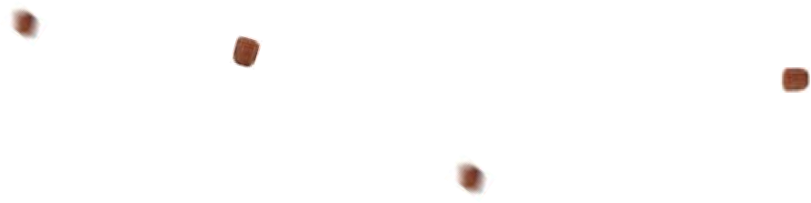
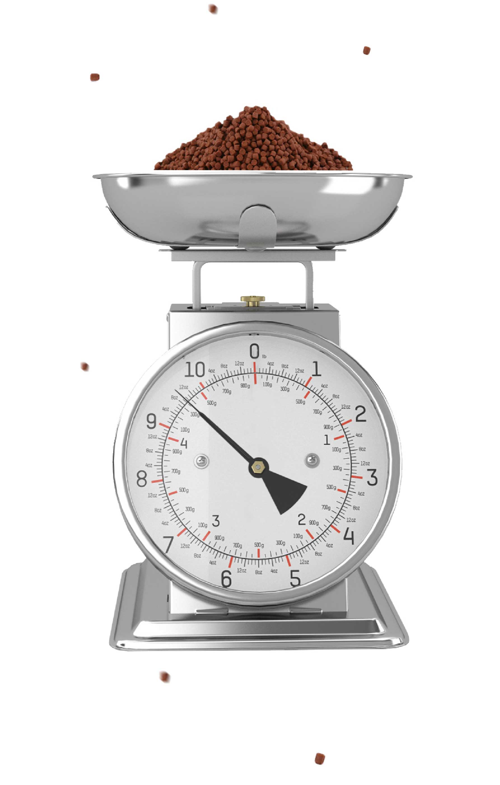
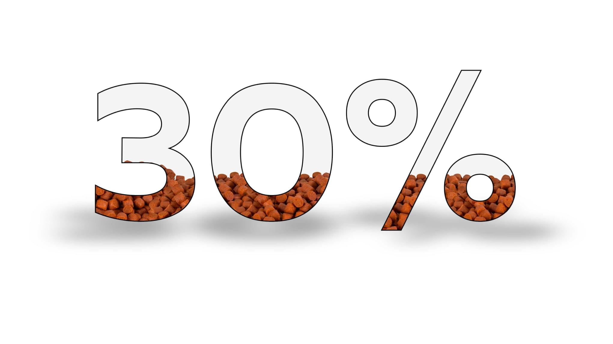
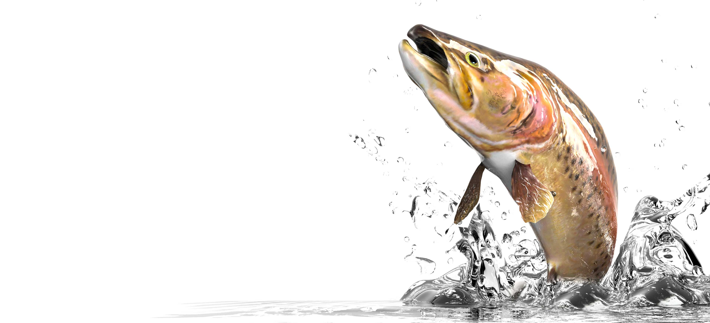
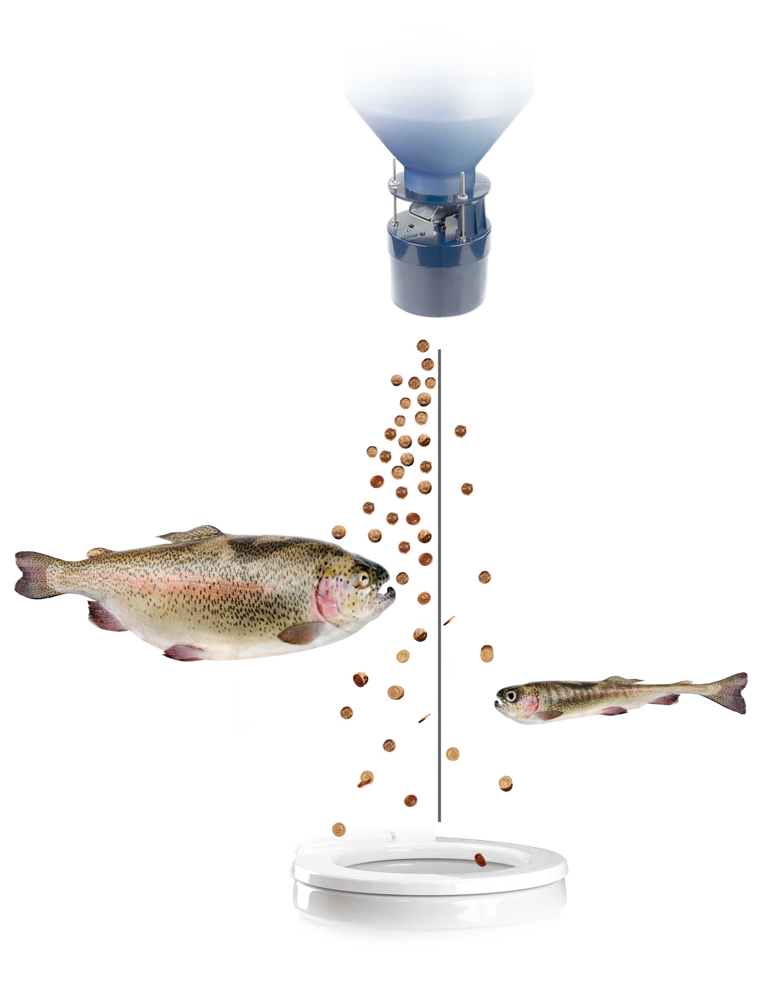
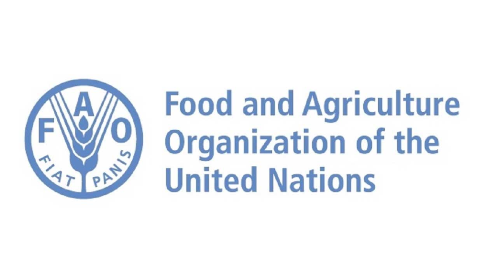
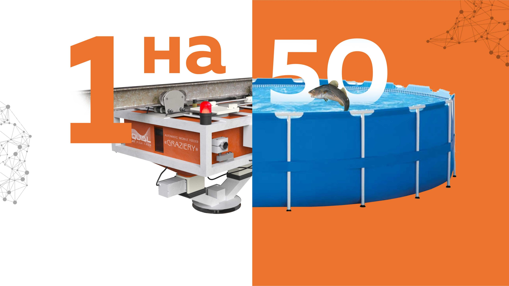
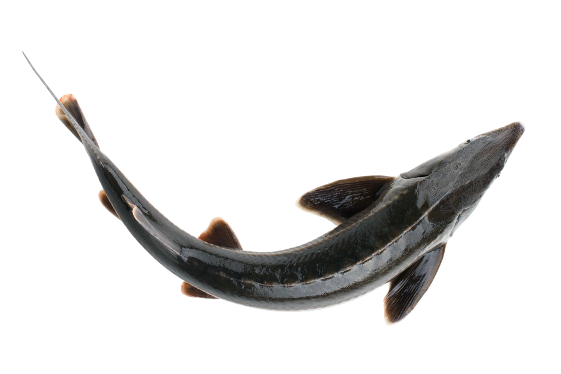
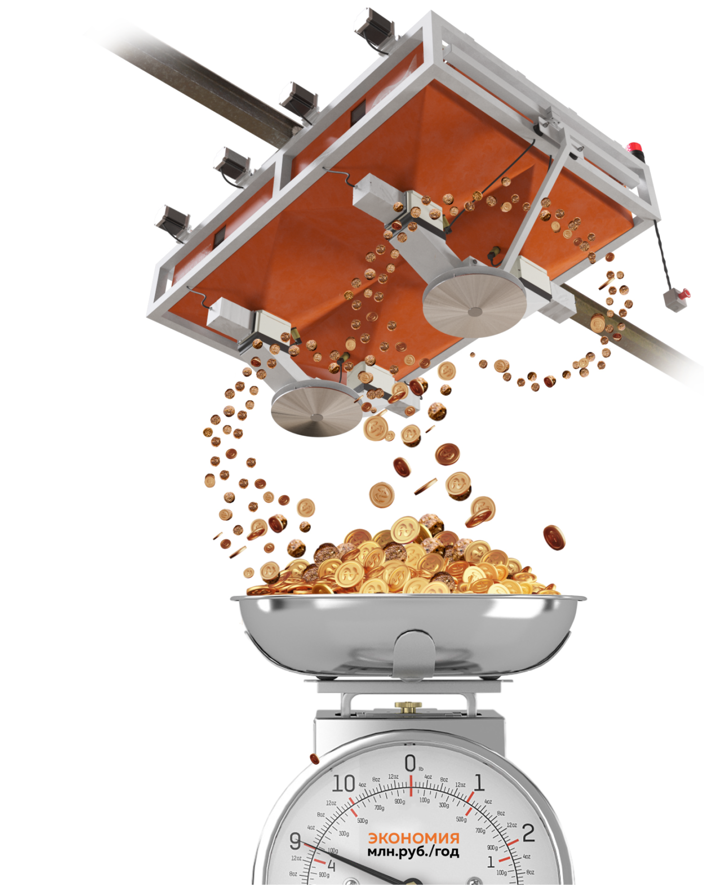

В GRAZIERY Go есть всё,
чтобы организовать кормление
на совершенно новом уровне

В GRAZIERY Go есть всё, чтобы организовать кормление на совершенно новом
уровне. Встроенные весы, быстрый ход, рассеиватель, большой объём бункера и радиоуправление позволят
легко справляться с разными задачами кормления. А новейшие аккумуляторы и быстрая зарядка откроют
новые горизонты управления.
Знакомьтесь, — самый точный
передвижной
кормораздатчикGRAZIERY Go

Первый в мире КОРМОРАЗДАТЧИК со встроенными
ВЕСАМИ GRAZIERY Go
Точно,значит точно!
до
корма экономят
встроенные электронные
весы за счет максимально
точного дозирования
GRAZIERY Go – новая точная
эпоха кормления


Недокорм и перекорм
основные проблемы рыбоводства
По данным “Международной организации
продовольствия и сельского хозяйства”“
Недокорм приводит к потере
продуктивности.
Перекармливание приводит к расточительству дорогих кормов и, кроме того,
является потенциальной
причиной загрязнения воды, что приводит к потере рыбы или требует дорогостоящих корректирующих мер.
Таким образом, как перекорм, так и недокорм имеют серьезные экономические
последствия, которые
влияют на жизнеспособность фермы…”
Вы можете кормить сразу от 20 до 50 бассейнов использую только
1 кормораздатчик GRAZIERY Go.
GRAZIERY Go принесет пользу как средней ферме так и крупному
индустриальному рыбоводному заводу. Разница будет лишь в объеме бункера и некоторых опциях.
В
мальковых цехах достаточно 1 коромраздатчика на 200 лотков.



Снижаем капитальные затраты
раза сокращаем количество кормораздатчиков
1 кормораздатчик доставляет одновременно 4 вида корма
За 1 поездку кормораздатчик кормит сразу все бассейны -
разными кормами
Быстрая скорость кормления , БЕЗ холостых / пустопорожних прогонов, за счет
того что “GRAZIERY Go” может одновременно доставлять/развозить до 4 разных видов корма.
От 1
до 4 отсеков для корма “GRAZIERY Go” позволяет одновременно загружать корма разного вида и размеры
и кормить разные бассейны разным кормом.
Данное конструктивное решение в 4 раза снижает
количество необходимых кормораздатчиков.
Значительно сокращает капитальные затраты.
Appetite Vision
революционная система контроля аппетита рыб
Автоматический контроль аппетита БЕЗ участия человека.
При подключение системы контроля аппетита «Appetite
Vision», кормораздатчик GRAZIERY Go начинает самостоятельно анализировать поедаемость корма и
регулировать дозу кормления. «Appetite Vision» на 10-30% повышает точность кормления за счет
мгновенного онлайн контроля поедаемости корма (аппетита рыбы). Аппетит рыб колеблется ежедневно /
постоянно от 5 до 20%. Только автоматический беспрерывный контроль может отследить эти колебания и
повысить точность кормления.
Технология «Appetite Vision»
основана на
передовых
технологиях машинного зрения и искусственном интеллекте